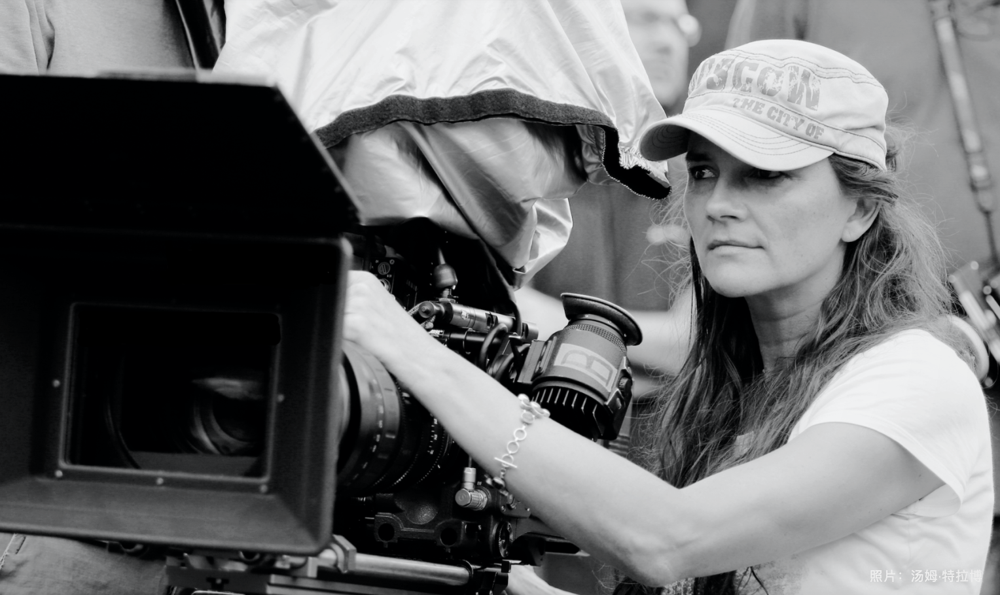

Katja Von Garnier
Brought life into charming delusion witch.

"When I wrote the script I occupied myself a lot with mythology in order to find out what really makes a heroe's story. The characters in our movie had to be greater than life - exactly cinema characters."
Here's a time line of Garnier's life:
ENGLISH / CHINESE
- 1966 - 12 月 15 日出生于德国威斯巴登，在陶努斯泰因长大。
- 1981 - 她的父亲弗里德里希·恩斯特·冯·加尼尔是一位世界著名的色彩设计师，在 她 15 岁生日时送给她一台相机。
- 1985 - 在法兰克福约翰沃尔夫冈歌德大学学习艺术史、德国语言学、戏剧和电影理论。
- 1989 - 导演了她的第一部短片“Day Trauma”（德语：“Tagtrauma”），不久之后，她去了慕尼黑影视学院学习导演艺术。
- 1990 - 她与瑞典同学 Ewa Karlström 一起成立了“VELA-X-Film Production”公司，并在接下来的几年中联合制作了三部电影。
- 1992 - 开始拍摄 55 分钟的学生毕业电影“Abgeschminkt”（《化妆！》）。
- 1994 - 短片大获成功，她因此被视为德国电影业的新星和“救世主”，并获得了恩斯特-鲁别奇奖、巴伐利亚和德国电影奖以及第 21 届学生奥斯卡奖。
- 1995 - 与美国制作公司签订合同，导演2000万美元的大制作《月光情圣》。但在她提出要完善剧本草稿和演员阵容时，制片厂显得毫无耐心。尽管她已经为这部电影投入了六个月的时间，但她仍然忠于自己的原则，并以“艺术理念差异”为由取消了合同。
- 1996 - 编导了她的第一部长片，音乐电影《碧波女贼》，讲述了四名女囚组成乐队的故事。
- 1997 - 在德国，《碧波女贼》引起了轩然大波，近年来几乎没有任何一部德国电影像它那样富有争议，承受了许多不分青红皂白的批评。
- 1998 - 电影原声CD发行后在德国排行榜上直升到第三名，后来甚至在德国排名第一，并保持了数周之久，并获得了“金唱片”。
- 1999 - 作为评审团成员之一出席了第 49 届柏林电影节。
- 2002 - 为《碧波女贼》女演员 Jasmin Tabatabai 的首张专辑“Only Love”中第五首歌“Absence makes the Heart beat”作词作曲。
- 2004 - 导演了《女权天使》，记录了美国妇女选举权运动的经过，由美国有线电视频道 HBO 赞助。希拉里·斯万克（Hilary Swank）和安杰丽卡·休斯顿（Anjelica Houston）主演，休斯顿因此获得了金球奖。
- 2007 - 导演《血腥巧克力》，该片为美国、德国、罗马尼亚和英国的国际合作。
- 2013 - 制作了《骏马奥斯温》，Cornelia Froboess（1968 年 Lubitsch 奖获得者）在其中扮演了一位可爱而严格的祖母。这部片子致敬了 Katja 少女时期的纵马时光，也是给女儿 Faye 的礼物，她很喜欢马。
- 2015 - 导演了《骏马奥斯温2》。
- 2017 - 导演了《骏马奥斯温3》.
她说，住在那里“有点像长袜子皮皮”，有狗和马的陪伴。
“我们去了法国的大西洋，两周以来我什么都没做，只拍了海水、波浪和沙滩的照片。每个人都对我很恼火，因为他们的脸不在照片上。但我真的拍到了很棒的海浪. 我完全被摄影吸引了，开始学着自己冲洗这些照片。”
正如她曾在一次采访中所说，“许多女性在影片中清楚地看到了自己，而男性则可以从中学到一些东西”。
《化妆！》 实际上只是电影艺术的“练习片”。这部电影的准备工作持续了整整一年，但拍摄只用了几周时间，部分是在制片人 Ewa Karlström 的学生公寓里制作的。
《化妆！》 实际上只是电影艺术的“练习片”。这部电影的准备工作持续了整整一年，但拍摄只用了几周时间，部分是在制片人 Ewa Karlström 的学生公寓里制作的。
《化妆！》实际上是一部低预算电影，仅花费 80,000 马克（约合 50,000 美元），却连续五个月位居德国电影排行榜前 10 名，并在德国影院上映了一整年，共吸引了 120 万德国观众. 据《明镜周刊》报道——“整个电影业听从她的吩咐”。她还因此收到了许多来自美国的电影邀请，好莱坞让她感觉就像“爱丽丝梦游仙境”。
“按照他们的规则，《月光情圣》根本不可能拍成我想要的样子，所以我就没拍。克服了迈出这一步刚开始的心理障碍后，我感觉轻松极了。
“我不想跌跌撞撞地陷入跟我本性不合并且我根本不愿意做的事情。当然，这事很诱人，因为突然之间我到了一个有钱可以拍电影的国家。但是对于我制作的第一部长片，一切都必须是对的，这样我才能忠实于项目本身。许多人觉得我疯了，因为我对好莱坞说了 ‘不’。但对我来说重要的问题是：这是否真的值得我投入生命中的 18 个月。”
“我不想跌跌撞撞地陷入跟我本性不合并且我根本不愿意做的事情。当然，这事很诱人，因为突然之间我到了一个有钱可以拍电影的国家。但是对于我制作的第一部长片，一切都必须是对的，这样我才能忠实于项目本身。许多人觉得我疯了，因为我对好莱坞说了 ‘不’。但对我来说重要的问题是：这是否真的值得我投入生命中的 18 个月。”
“自 12 岁起，米洛斯·福尔曼 (Milos Forman) 的电影《头发》(Hair) 就一直是我的心目中的第一名，至今仍是我的最爱。音乐电影一直让我着迷。音乐也是如此，它能帮人摆脱糟糕的情绪，让悲伤变成一件无足轻重的小事。
“我希望它是一部音乐电影，但不仅仅是给音乐加上奢华的视觉效果。音乐当然很重要，因为它是压抑情绪的发泄出口，但就戏剧创作的基调而言，四个女人不断发展的友谊才是电影的核心。当我写剧本时，我花了很长时间研读神话，以便找出真正构成英雌故事的东西。我们的角色必须比生命更伟大——真正的电影人物理应如此。”
“我希望它是一部音乐电影，但不仅仅是给音乐加上奢华的视觉效果。音乐当然很重要，因为它是压抑情绪的发泄出口，但就戏剧创作的基调而言，四个女人不断发展的友谊才是电影的核心。当我写剧本时，我花了很长时间研读神话，以便找出真正构成英雌故事的东西。我们的角色必须比生命更伟大——真正的电影人物理应如此。”
Jasmin Tabatabai，《碧波女贼》女演员兼作曲：
“虽然《碧波女贼》被认为是一部‘女性解放电影’，但一开始我们并没有在这个问题上考虑太多，直到看到影评人的反应：充斥着糟糕的恶评，除了来自电影业的谩骂之外别无其他。他们是如此卑鄙而恶毒，以至于让人觉得：这些评论与电影无关，而是完全不同的一种东西。
“《碧波女贼》并非针对男性，而是一部只为女性拍摄的电影。女性是利益的中心，女性做出决定。这显然对他们是一种威胁。但我们当时没有燃起任何战火，拯救我们的是一个确凿的事实：我们从未彼此攻击。我们也有内部争论，可以说是互相敲打——但对外我们一直站在一起，这也获得了那些家伙的尊重。
“但今天，我会做完全不同的事情。今天我会展开攻势，故意对他们说：‘这就是一部女性电影！由女性制作，为女性制作。装模作样的男人，你们有意见？'”
“虽然《碧波女贼》被认为是一部‘女性解放电影’，但一开始我们并没有在这个问题上考虑太多，直到看到影评人的反应：充斥着糟糕的恶评，除了来自电影业的谩骂之外别无其他。他们是如此卑鄙而恶毒，以至于让人觉得：这些评论与电影无关，而是完全不同的一种东西。
“《碧波女贼》并非针对男性，而是一部只为女性拍摄的电影。女性是利益的中心，女性做出决定。这显然对他们是一种威胁。但我们当时没有燃起任何战火，拯救我们的是一个确凿的事实：我们从未彼此攻击。我们也有内部争论，可以说是互相敲打——但对外我们一直站在一起，这也获得了那些家伙的尊重。
“但今天，我会做完全不同的事情。今天我会展开攻势，故意对他们说：‘这就是一部女性电影！由女性制作，为女性制作。装模作样的男人，你们有意见？'”
If you have time, you should read more about this incredible woman on her Wikipedia entry and her homepage.